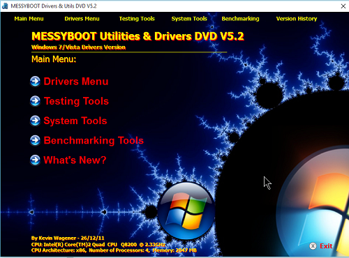

>MessyBoot 5.2 Windows Menus
Explore MessyBoot 5.2 Windows Menu Via the Interactive Demo:

Windows Main Menu
The Windows Main Menu contains the various categories of tools available on the Windows section of the DVD. It also features links along the top of the menu for the main menu options.
Click on the individual menu items on the image above, the menu will function in the same way as the real thing, giving you detailed explanations of each menu option.
Sub Menus
- Drivers Menu
- Testing Tools
- System Tools
- Benchmarking Tools
- What's New?
Support or Contact
Kev Messy: kevwag on GitHub
MessyBoot Email:messyboot@gmail.com